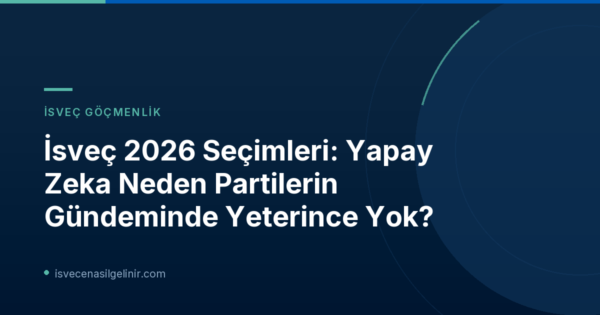

İsveç Siyasetinde Yapay Zeka Sessizliği: Uzmanlar Endişeli
İsveç kamu yayıncısı SVT’nin gerçekleştirdiği analiz, ülkenin en büyük sekiz parlamento partisinin seçim manifestolarında yapay zeka (AI) konusuna verilen önemin beklenenin altında olduğunu gözler önüne serdi. Rapora göre, bu partilerin yarısı – Sverigedemokraterna (SD), Vänsterpartiet (V), Kristdemokraterna (KD) ve Miljöpartiet (MP) – manifestolarında yapay zeka veya yapay zeka teriminden tek bir kez bile bahsetmedi.
Lund Üniversitesi Ekonomi Tarihi Bölümü'nden profesör ve Kraliyet Mühendislik Bilimleri Akademisi (IVA) CEO'su Sylvia Schwaag Serger, bu durumdan duyduğu endişeyi dile getiriyor: "Kaygılıyım. Birçok İsveçlinin yapay zeka hakkında çok düşündüğünü ve endişeli olduğunu düşünüyorum. Bu durum, insanların endişeleri ile seçimde konuşulanlar arasında bir boşluk yaratıyor." Serger, AI'ın ekonomi, işgücü piyasası, gelecekteki emeklilik sistemleri, vergi sistemleri ve eğitim gibi toplumun neredeyse her alanını etkileyeceğini vurguluyor. Ona göre, AI'ın bir rol oynamayacağı bir toplumsal sorun hayal etmek bile mümkün değil.
Göteborg Üniversitesi Siyaset Bilimi Profesörü Henrik Ekengren Oscarsson da yapay zekanın neden sıcak bir seçim konusu haline gelmediğini açıklıyor: "Bir sorunun gündeme gelmesi için açık bir çatışmanın olması gerekir. Partilerin birbirleriyle tartışmak ve bu konuyu stratejik bir kazanç olarak görmek istemeleri gerekiyor ki, böyle bir durum şu an için görünmüyor. Aksi takdirde bu konu gündemin üst sıralarında olurdu." ABD'de ise büyük veri merkezlerinin elektrik ihtiyacı, AI'ın işten çıkarmalara yol açma riski ve güçlü AI sistemlerinin nasıl düzenleneceği gibi konuların siyasi tartışmaların merkezine oturduğu belirtiliyor.
Partilerin Yapay Zeka Manifestolarındaki Yeri: Kim Ne Kadar Değindi?
SVT, sekiz parlamento partisinin seçim manifestolarını titizlikle inceleyerek "yapay zeka" veya "artificiell intelligens" kelimelerinin kaç kez geçtiğini hem otomatik hem de manuel olarak saydı. Ayrıca manifestoların uzunlukları farklı olduğundan, her 1000 kelimeye düşen AI bahsetme oranı da hesaplandı. İşte partilerin yapay zeka konusuna manifestolarında ne kadar yer verdiğini gösteren detaylı tablo:
| Parti | AI'dan Bahsetme Sayısı | AI Omnämnande / 1000 Kelime |
|---|---|---|
| Centerpartiet (C) | 19 | 0,69 |
| Socialdemokraterna (S) | 8 | 1,13 |
| Moderaterna (M) | 5 | 0,30 |
| Liberalerna (L) | 5 | 0,53 |
| Sverigedemokraterna (SD) | 0 | 0 |
| Vänsterpartiet (V) | 0 | 0 |
| Kristdemokraterna (KD) | 0 | 0 |
| Miljöpartiet (MP) | 0 | 0 |
Tabloya göre, Centerpartiet (C) yapay zekayı manifestosunda en çok anan parti olurken (19 kez), Sosyal Demokratlar (S) manifestolarının göreceli kısalığına rağmen 1000 kelimeye düşen AI bahsetme oranıyla lider konumda (1.13). Her iki parti de AI'ın işler, işgücü piyasası ve büyüme üzerindeki etkilerine odaklanıyor. Moderaterna (M) ve Liberalerna (L) ise beşer kez AI'dan bahsederken, deepfake'ler, dezenformasyon ve AI hakkındaki bilgi ihtiyacına dikkat çekiyorlar.
İsveç Partilerinin Yapay Zeka Konusundaki Temel Görüşleri
SVT, sekiz parlamento partisine "Seçimdeki en önemli yapay zeka sorunu sizce nedir?" sorusunu yöneltti. Partilerin verdikleri yanıtlar, AI'a yaklaşımlarındaki farklılıkları ortaya koyuyor. Bu detaylı politikalar ve hedefler, gelecekte İsveç'te yaşamak veya İsveç Vatandaşlık Testi'ne hazırlanırken karşılaşabileceğiniz düzenlemeler açısından önem taşıyor.
Partilerin En Önemli Yapay Zeka Konuları
- Centerpartiet (C) - Dijitalleşme Politikası Sözcüsü Niels Paarup-Petersen: "En önemli AI konusu, İsveç'in gelişmeye liderlik etmesi, rekabet gücünü güçlendirmesi ve geleceğin işlerini yaratması için ulusal bir AI merkezi kurmaktır. Aynı zamanda, teknolojinin sorumlu bir şekilde kullanılması ve tüm ülkeye fayda sağlaması için eğitim ve AI güvenliğine yatırım yapmalıyız."
- Kristdemokraterna (KD) - Dijitalleşmeden Sorumlu Sivil İşler Bakanı Erik Slottner: "Cömert opsiyon programları aracılığıyla AI yetkinliğinin startup'lara kazandırılmasını kolaylaştırmak istiyoruz, okullarda AI kaynaklı dezenformasyon eğitimini güçlendirmek ve kamu sektörünün inovatif İsveç şirketlerinden refah teknolojisi satın alabileceği bir devlet uygulama mağazası kurmak arzusundayız. Ayrıca, yetkililerin, belediyelerin ve bölgelerin kendi geliştirdikleri AI çözümlerini birbirleriyle paylaşmalarını mümkün kılmak istiyoruz."
- Vänsterpartiet (V) - Ulaştırma Komitesi Üyesi Malin Östh: "Yapay zekanın refahı güçlendirmek ve çalışma koşullarını iyileştirmek için kullanılması, gücün birkaç aktörde yoğunlaşmasına katkıda bulunmamasıdır. Bunu mümkün kılmak için iyi düşünülmüş ve demokratik bir dijitalleşme ihtiyacı vardır; bu, aşağıdan yukarıya doğru inşa edilmeli ve sorumlu bir güvenlik ve risk yönetimi ile karakterize edilmelidir."
- Sverigedemokraterna (SD) - Parti Sekreteri Mattias Bäckström Johansson: "En önemli AI konusu, İsveç'in geride kalmaması, araştırma, yetkinlik, bilgi işlem gücü ve pratik uygulamalara uzun vadeli yatırımlar yoluyla teknoloji lideri olmasıdır. AI, İsveç rekabet gücü, güvenliği ve refahı için stratejik bir gelecek meselesi olarak ele alınmalıdır."
- Socialdemokraterna (S) - İşgücü Piyasası Politikaları Sözcüsü Ardalan Shekarabi: "İsveç'i AI'ın İsveç işgücü piyasası ve İsveç ekonomisi üzerindeki etkisini karşılamaya hazırlayacak bir İsveç AI programı görmek istiyoruz. Bu, diğer şeylerin yanı sıra işgücü piyasasına adım atacak gençler için çabalar, AI gelişimine uygun bir dönüşüm desteği ve iş dünyası ile kamu sektörünün AI yetkinliğinin güçlendirilmesi anlamına geliyor."
- Liberalerna (L) - Ulaştırma, AI ve Dijitalleşme Politikaları Sözcüsü Helena Gellerman: "İsveç rekabet gücünü güçlendirmek için AI araştırmalarına yatırım yapmalıyız ve AI'daki gelişimi demokratik yönde yönlendirmek istiyorsak ön saflarda yer almalıyız. İsveç dilimizi, kültürümüzü ve değerlerimizi korumak için bir İsveç dil modeli geliştirmemiz önemlidir, böylece gelecekte teknolojinin tehlikelerini ve fırsatlarını değerlendirme yetkinliğini de inşa etmiş oluruz."
- Miljöpartiet (MP) - Parlamento Üyesi Jan Riise: "İleride tartışılacak AI'ın birçok yönü var. Belki de en önemlisi, burada ve Avrupa'da güvenlik konusunda birleşmek, örneğin İsveç'te bir AI güvenlik enstitüsü kurmak ve en riskli uygulamalar için AB mevzuatını yürürlüğe koymaktır."
- Moderaterna (M) - AB Bakanı Jessica Rosencrantz: "Moderaterna, İsveç'in Avrupa'nın Silikon Vadisi olmasını ve daha fazla şirketin burada başlamasını, büyümesini ve kalmasını istiyor. Bu nedenle, çalışma, tasarruf ve sermaye üzerindeki vergilerin sürekli düşürülmesi, daha az bürokrasi, dünya lideri bir personel opsiyon programı, hedefe yönelik bir teknoloji ve yetenek vizesi ve hızı artırmak için iş dünyasını, akademiyi ve kamu sektörünü bir araya getiren bir AI konseyi ile seçime gidiyoruz."
Neden İsveç'te AI Siyasi Bir Tartışma Konusu Değil?
Yapay zekanın, özellikle istihdam, ekonomi ve güvenlik gibi hayati alanlarda henüz yeterince siyasi bir tartışma konusu olmaması, İsveç'in gelecekteki konumunu etkileyebilecek bir durum olarak değerlendiriliyor. Uzmanlar, İsveç siyasetinin bu konuda daha aktif bir diyalog ve stratejik bir yaklaşım geliştirmesi gerektiğini belirtiyor. Toplumun endişeleri ve AI'ın getirdiği fırsatlar ile riskler göz önüne alındığında, 2026 seçimleri öncesinde bu sessizliğin bozulup bozulmayacağı merak konusu.
Referanslar:
- SVT Nyheter Inrikes: Hälften av partierna nämner inte AI i sina valmanifest
İsveç'te Yaşam ve Göçmenlik Hakkında Daha Fazla Bilgi Edinin
İsveç'e yerleşmeyi düşünenler, vatandaşlık süreçleri ve ülkedeki güncel gelişmeler hakkında kapsamlı bilgiler için web sitemizi ziyaret edin.